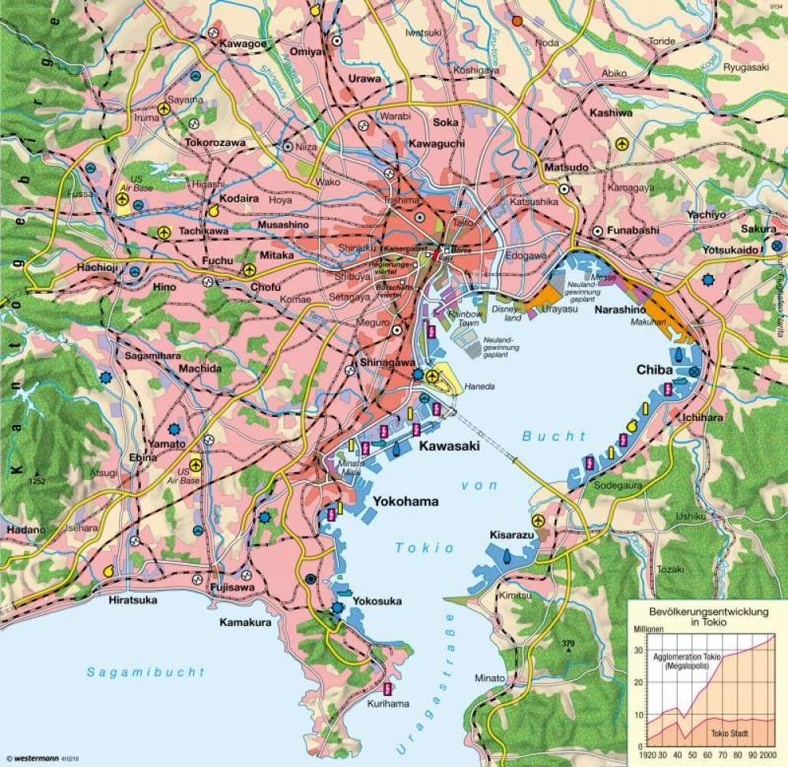

Tokios Viertel entdecken
Jeder Stadtteil fühlt sich wie eine eigene Stadt an:
- Akihabara: Das Paradies für Gaming- und Anime-Fans.
- Shinjuku: Wolkenkratzer und unzählige Leuchtreklamen bei Nacht.
- Harajuku: Bunte Mode, Cosplay und ausgefallene Snacks.

← Zurück zur Übersicht